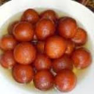
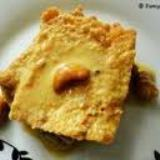
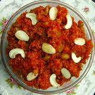
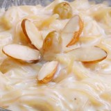

|  | Gulab Jamun : This sweet dish is India's most famous dish. It is made out of flour and broken milk. Made into fine balls,and then deep fried, dipped in sugar syrup. |
|  | Double Ka Meetha : For all the bread lovers,this will be your number one dish. Bread deep fried in clarified butter and then dipped in milk with cardamoms. |
|  | Gajar ka Halwa : Carrots best consumed in this form. Carrot are fried in clarified butter and then sugar is added to the mix. |

|
Banana Pie : Bananas to be eaten in the best form. For all those pie lovers, you should try this! |
|  | Rice Kheer : Never imagined eating rice as a sweet dish ? Well we present to you, the Rice sweet (rice kheer). Boiled rice in milk and sugar along with broekn cardomoms. The yummiest dish ever. |